Down payments¶
A down payment is a partial payment made by the buyer when a sales contract is concluded. This implies both parties’ (seller and buyer) full commitment to honor the contract.
With a down payment, the buyer pays a portion of the total amount owed while agreeing to pay the remaining amount at a later date. In turn, the seller provides goods or services to the buyer after accepting the down payment, trusting that the remaining amount will be paid later on.
Create invoices¶
When a sales order is confirmed, the option to create an invoice becomes available, via the Create Invoice button, located in the upper-left corner of the sales order form. When clicked, a Create invoices pop-up appears.
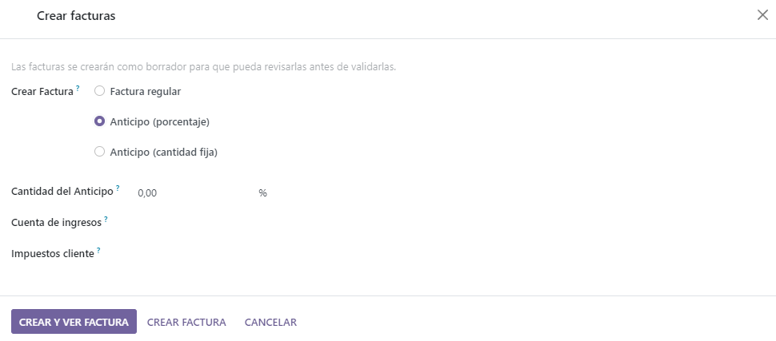Note
Invoices are automatically created as drafts, so they can be reviewed before validation.
On the Create invoices pop-up, there are 3 options to choose from in the Create Invoice field:
Regular invoice
Down payment (percentage)
Down payment (fixed amount)
Note
If Regular Invoice is selected, the other fields disappear, as they only pertain to down payment configurations.
Initial down payment request¶
On the Create invoices pop-up form, the down payment options are:
Down payment (percentage)
Down payment (fixed amount)
Once the desired down payment option is selected in the Create Invoice field on the pop-up form, designate the desired amount, either as a percentage or a fixed amount, in the Down Payment Amount field.
Then, select the appropriate income account for the invoice in the Income Account field. Next, select a tax amount, if necessary, in the Customer Taxes drop-down field.
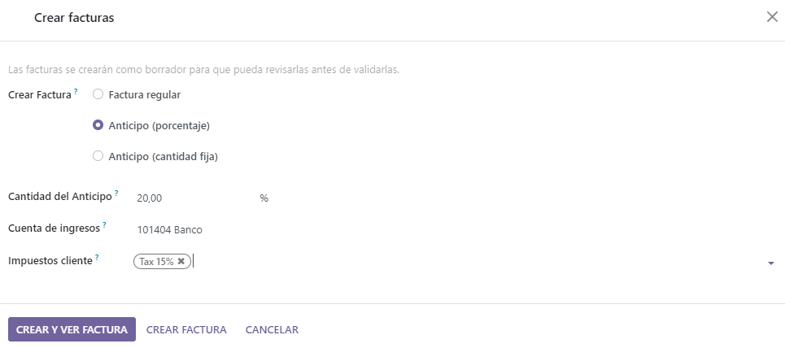Once all fields are filled in with the desired information, click the Create Draft Invoice button. Upon clicking this button, Odoo reveals the Customer Invoice Draft.
In the Invoice Lines tab of the Customer Invoice Draft, the down payment that was just configured in the Create invoices pop-up form appears as a Product.
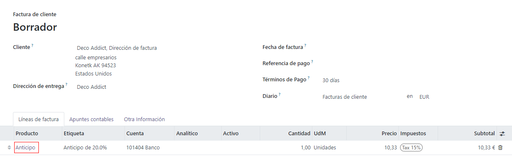Note
When the Down payment product in the Invoice Lines tab is clicked, Odoo reveals the product form for the down payment.
By default, the Product Type of down payment products generated for invoices are set as Service, with the Invoicing Policy set to Prepaid/Fixed Price.
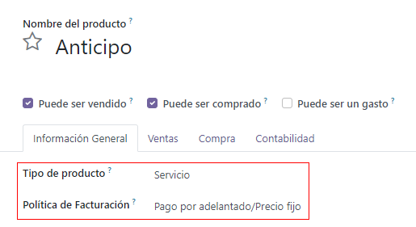This product can be edited/modified at any time.
Warning
If Based on Delivered Quantity (Manual) is chosen as the Invoicing Policy, an invoice will not be able to be created.
Example: request 50% down payment¶
Note
The following example involves a 50% amount down payment on a product (Cabinet with Doors) with Ordered quantities as the Invoicing Policy.
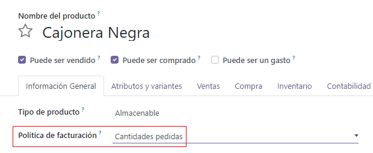First, navigate to , and add a Customer to the quotation.
Then, click Add a product in the Order Lines tab, and select the Cabinet with Doors product.
When the order is confirmed (via the Confirm button), the quotation turns into a sales order. Once this occurs, create and view the invoice by clicking Create Invoice.
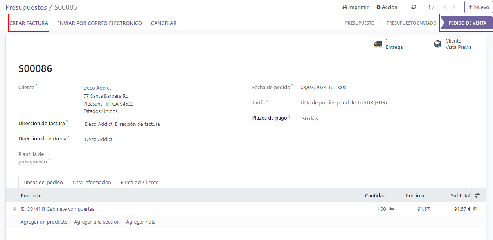Next, on the Create invoices pop-up window that appears, select Down payment
(percentage), and type 50 in the Down Payment Amount field.
Note
The Income Account and Customer Taxes fields are not required fields, and they will not appear if they’ve already been preconfigured in previous down payment requests.
For more information, check out the documentation on customer taxes modification on down payments and income account modification on down payments.
Lastly, click Create Draft Invoice to create and view the invoice draft.
Clicking Create Draft Invoice reveals the draft invoice, which includes the down payment as a Product in the Invoice Lines tab.
From there, the invoice can be confirmed and posted by clicking Confirm. Confirming the invoice changes the status from Draft to Posted. It also reveals a new series of buttons at the top of the page.
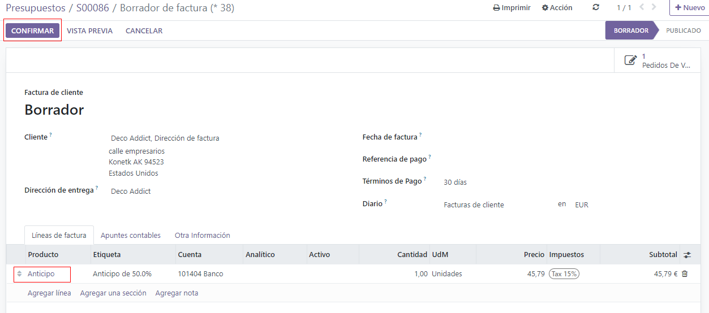From those buttons, the payment can be registered by clicking Register Payment.

Doing so reveals a Register Payment pop-up form, which is auto-populated with the necessary information. Confirm the information provided is correct and make any necessary adjustments. When ready, click the Create Payment button.
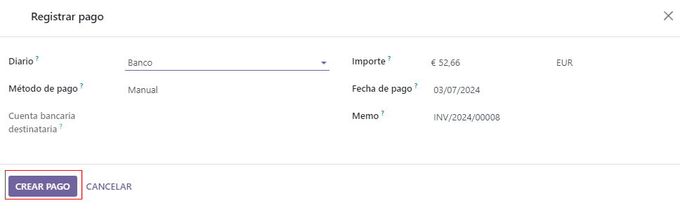After clicking Create Payment, Odoo reveals the customer invoice, now with a green In Payment banner in the upper-right corner.
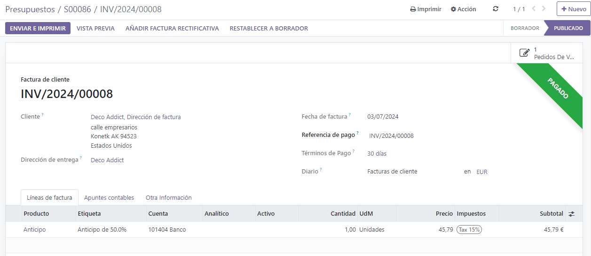Now, when the customer wants to pay the remaining amount of the order, another invoice must be created. To do that, return to the sales order, via the breadcrumb links.
Back on the sales order, a new Down Payments section is present in the Order Lines tab, along with the down payment that was just invoiced and posted.
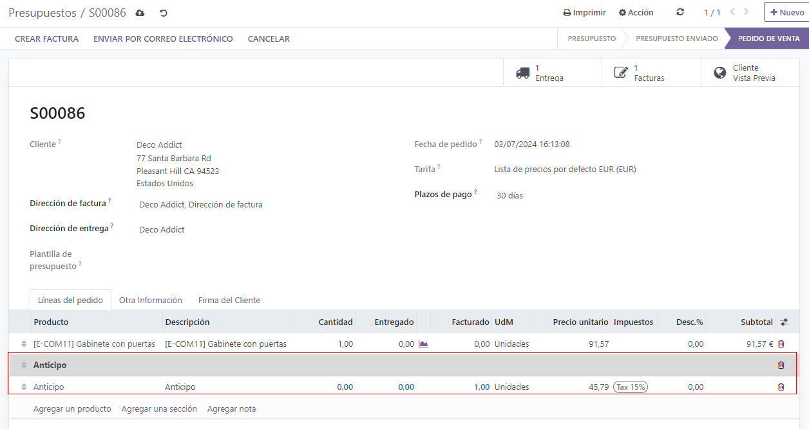Next, click the Create Invoice button.
On the Create invoices pop-up window that appears, there is a new field: Deducir anticipo
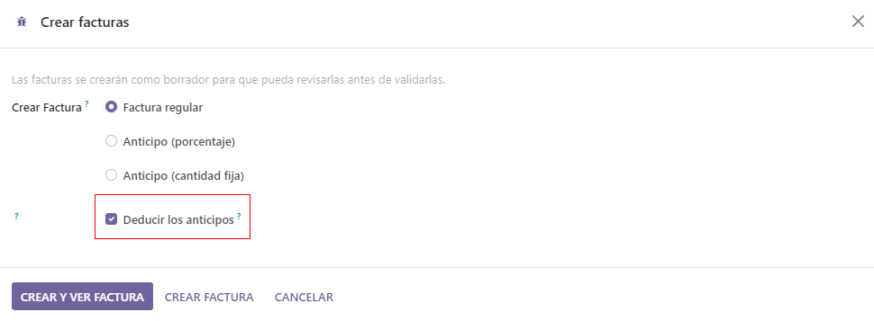If the remaining amount is ready to be paid, select the Regular Invoice option. Odoo will create an invoice for the exact amount needed to complete the total payment, as indicated in the Amount to invoice field.
Once ready, click Create Draft Invoice.
Doing so reveals another Customer Invoice Draft page, listing all the invoices for that specific sales order in the Invoice Lines tab. Each invoice line item displays all the necessary information related to each invoice.
To complete the flow, click Confirm, which changes the status of the invoice from Draft to Posted. Then, click Register Payment.
Once again, the Register Payment appears, with all fields auto-populated with the necessary information, including the remaining amount left to be paid on the order.
After confirming that information, click Create Payment. Doing so reveals the final Customer Invoice with a green In Payment banner in the upper-right corner. Also, both down payments are present in the Invoice Lines tab.
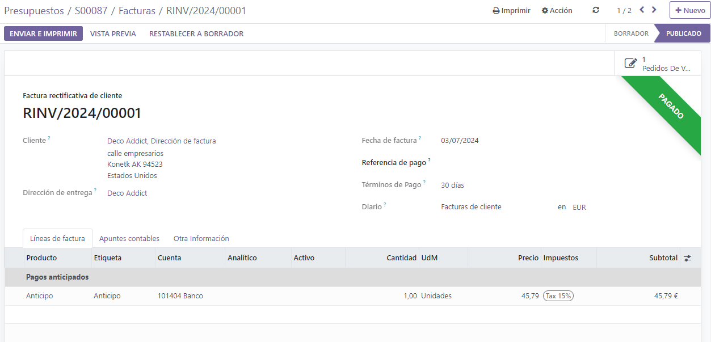At this point, the flow is now complete.
Note
This flow is also possible with the Fixed amount down payment option.
Important
If a down payment is used with a product that has a Delivered quantities invoicing policy, the down payments will not be able to be deducted when it comes time to invoice the customer.
This is because, due to the invoicing policy, the product(s) would have to be delivered before creating the final invoice.
If nothing has been delivered, a Credit Note is created, which cancels the draft invoice that was created after the down payment.
To utilize the Credit Note option, the Inventory application must be installed, in order to confirm the delivery. Otherwise, the delivered quantity can be entered manually directly on the sales order.
Customer taxes modification on down payments¶
To adjust the income account and customer taxes attached to a down payment, navigate to the
Products page (), search for the
Down Payment product in the search bar, and select it to reveal the product detail page.
On the Down Payment product page, in the General Information tab, the customer taxes can be modified in the Customer Taxes field.
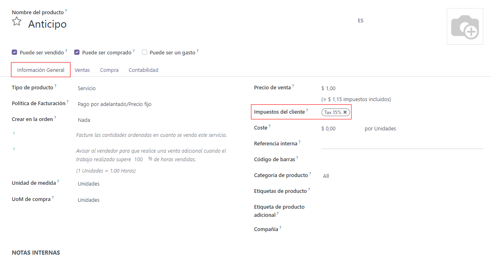Income account modification on down payments¶
To change or adjust the income account attached to the Down Payment product page, the Accounting app must be installed.
With the Accounting app installed, the Accounting tab becomes available on the product page. That tab will not be accessible without the Accounting app installed.
In the Accounting tab, the income account can be changed in the Income Account field, located in the Receivables section.
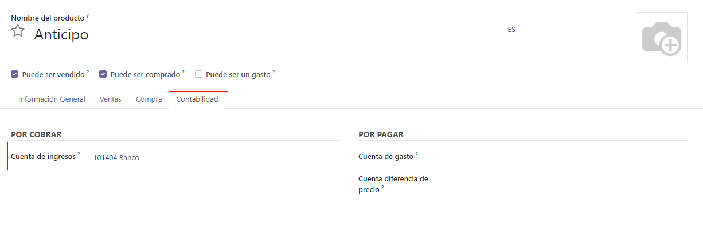